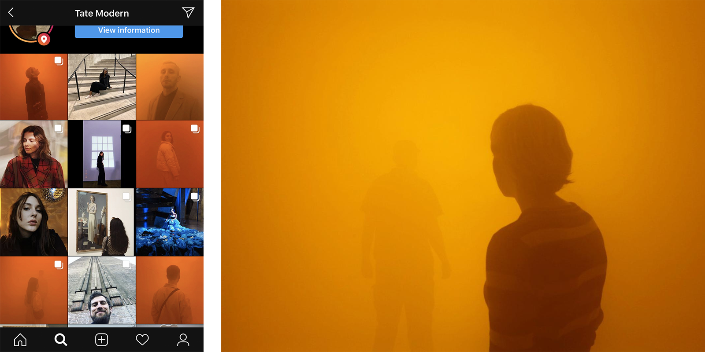
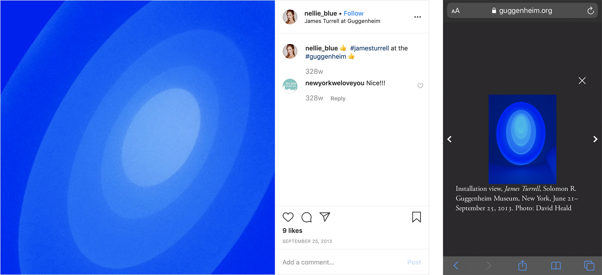
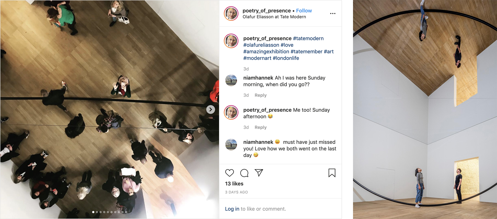

Anyone who has stood in front of a ‘masterpiece’ – that is, in this context, a work of art which is familiar because of popular culture – knows the confusion that comes with it. The work is somehow smaller or larger, the colours bolder or more muted than you had imagined. I can remember how massive Seurat’s ‘Bathers at Asnières’ was as a child and when I saw ‘Cafe Terrace at Night’ earlier this year my first remark was that there, amongst the vast whiteness of the gallery, the painting seemed tiny.
A common defence of abstract expressionism is that in person viewing is required for proper understanding or appreciation, an indirect example of what John Berger describes as ‘cultural mystification’1 by the ruling classes. For example, seeing a Rothko in the strictly controlled environment demanded by the artist has been described as a ‘religious experience’2.
Here I examine the implications of the ‘Internet Age’, specifically the age of the social internet, for art. I focus on Instagram (the largest photo and video sharing platform, in terms of registered users3), although statements could be applied to other social networks.
At the time of writing, there are three exhibitions on show at the Tate Modern: Olafur Eliasson’s ‘In Real Life’ and retrospectives of Nam Jun Paik and Dora Maar. Of the 100 most recent Instagram photos geotagged at the gallery, 27 are of ‘In Real Life’, three of the Paik exhibition and two of the Maar. One work attracts particular social media attention: ‘Din blinde passager’ (2010), a 39-metre-long tunnel filled with a dense fog which limits viewers’ visibility as they move through a landscape of changing fluorescent light. As someone who has physically experienced it, I can say that these photos do not effectively reproduce the work, instead Eliasson’s light tunnel is the stage for a performance of self-expression.
20 Left: Screenshot from Instagram app of Tate Modern geotag page, Right: Photograph of ‘Din blinde passager’ from Eliasson’s website
The traditional art photo model ‘what I saw’ doesn't work inside ‘Din blinde passager’, instead Eliasson encourages photographers to follow the more popular social media model ‘where I/we were’. Eliasson has described the increasingly popular move by art spaces to prohibit the use of mobile phones as a ‘restriction’ to physical experiencers and the ‘narrative’ of art4.
Many of the photos are selfies, the epitome of this ‘where I was’ format, there is little consistency to these reproductions otherwise: users have applied filters and used other creative effects, crops and camera angles. The colour reproduction of phone cameras is often poor, especially in non-direct lighting. All of this can be damaging considering these images are usually visitors’ first and, for non-visitors, potentially their only encounter with an artwork. JiaJia Fei – former Associate Director of Digital Marketing at the Guggenheim, which prohibits photography5 – describes the internet as ‘a two way stream of information’: these photos compete with those distributed by ‘the authority’ (museums and galleries) who distribute ‘correct’ reproductions, with ‘proper attributions, captions and any of the didactic material that's associated with [the artwork].’6.
21 22 Left: Instagram post showing James Turrell installation at the Guggenheim (over 15000 photos of the installation were shared on social networks, despite the museum's photography restrictions23), Right: Photograph of the same installation on the Guggenheim website
Curator Sarah Green examines the dialogical nature of the internet and the relationship between art spaces and audiences in an episode of PBS’s ‘The Art Assignment’7: ‘For so long museums were the authority imparting their knowledge upon the huddled masses. But with social media, the huddled masses can easily impart their knowledge on the authority’. Visitors, who might not have used traditional feedback methods, can provide valuable insight through their photos/ videos and captions in hash- and geo-tagged posts to social networks. Green suggests the ‘missions’ of museums and galleries ‘involve sharing their collections with the public’ and that the internet and social media have expanded their ‘conception of public’ beyond their ‘geographical boundaries’.
Art spaces should use social media to share accurately reproduced imagery of works from their collection and promote physical experiences. In fact, they are obligated to do so: reproductions are shared whether they choose to engage or not.
Instagram and other social networks such as Pinterest have digitised and made public the home pinboards described in the first essay of ‘Ways of Seeing’, perhaps beginning to enact Berger’s suggestion that ‘these boards should replace museums.’8.
For artists, social media is not only a way of accessing work but a direct means of distribution: as Green highlights, it's not uncommon for artists to have an Instagram account, where they post photos of their daily lives and artistic process alongside their work, allowing for a better understanding of their influences and processes. In the absence of museums and galleries, artists are freer with what and where they can produce, however, just as these traditional art spaces might choose work based on what Green calls ‘Instagrammability’, artists may use the same metric when producing work.
Walter Benjamin’s statement about ‘the aura of a work of art wither[ing] in the age of mechanical reproduction’9 now applies to how we physically experience originals. Our compulsion to reproduce has led to the phenomena of ‘seeing through the screen’ and screens can also be distracting to others, especially in the case of experience artworks (for instance producing light pollution in an installation by James Turrell6).

24 25 Left: Children on phones in front of Rembrandt’s ‘The Night Watch’ (image went viral in 2016, it was later revealed the children were using a ‘multimedia tour’26), Right: People take photographs in front of van Gogh’s ‘The Starry Night’
According to an article published in the ‘Journal of Consumer Research’: ‘when the intention to share photos with others is salient during the experience, it decreases consumers’ enjoyment of that experience, relative to taking photos to preserve memories for the self. This decrease occurs because taking photos to share involves the prospect of being evaluated or judged by others, increasing self-presentational concern.’10. When I take a photo or video of an artwork I respond to in a museum or gallery (which were not included in the article’s studies), my intention is to preserve that response, so that I can refer to it after the physical experience. These photos capture my perspective and can focus on particular elements of the artwork, in such a way existing photos on the internet do not. Green proposes ‘the camera and Instagram are tools we now use in [the] construction of meaning [around art] (...) Selecting and framing alternative views’, these ‘alternate views' contribute to what she calls ‘the communal life of [the] artwork’.
When sharing is not premeditated and intention occurs after the physical experience has ended, photos/ videos of artworks can be more effective for recalling and communicating responses than resources less intrusive to the physical experience: memory alone or existing photos.
A study which examined ‘the socially-oriented and object-oriented motivations’ of visitors to an art museum (during a seven-day period in 2015) found that half of the photos visitors posted to Instagram contained people, whereas three quarters contained museum objects. The most popular type of image – and the one which I suggest is most valuable to art discourse online – depicted only objects (47%)11. Again, I approach this study with caution considering Eliasson encourages the inclusion of people in depictions of ‘Din blinde passager’ and ‘How do we live together?’ (2019) - another work from ‘In Real Life’, which contains a large mirror - practically requires it.
27 28 Left: Instagram post showing ‘How do we live together?’, Right: Photograph of ‘How do we live together?’ from Eliasson’s website
‘In Real Life’ is emblematic of a shift in museums and galleries from objects to 'experiences' (potentially inspired by a similar shift in commerce). Benjamin argues that ‘Even the most perfect reproduction of a work of art’ fundamentally lacks that work's ‘presence in time and space, its unique existence at the place where it happens to be.’12. Experience artworks reconsider the importance of ‘time and space’ and this concept of ‘unique’ness and rarity (which have traditionally drawn viewers to museums and galleries). ‘Din blinde passager’ is effective not only because it isn't in your living room, but because it can't be.
This is, of course, also true of the aforementioned ‘Rothko rooms’ or, for example, the ceiling of the Sistine Chapel. I'm not arguing that experience art was born out of our lack of interest in singular, static images - the likes of which can be and are digitally reproduced – but that its widespread integration into popular culture and art spaces (with an emphasis on more dynamic work such as ‘Din blinde passager’) is propelled by it. Museums and galleries compete not only with reproductions of their art, but everything accessible via 21st century technology.
5.9 million people visited the Tate Modern in 201813, whereas approximately 4.1 million saw ‘Avengers: Infinity War’ on 2018's opening weekend alone in the UK14 15. The gallery's attendance rose 3.7% compared to 201713, in fact English museum and art gallery attendance overall increased 6% in 201816 (a DCMS report suggested 2.8% and 4.4% rises in the first and second quarters of 201917, although complete data for the year is currently unavailable). The notion of the intimate experience of art as a ‘religious’ or spiritual one far precedes Rothko, Benjamin acknowledges that ‘the earliest art works originated in the service of a ritual—first the magical, then the religious kind’18 and modern galleries mimic traditional places of worship (a room dedicated to a cartoon by Da Vinci is described by Berger as ‘like a chapel’19). But perhaps it's in the 'Internet Age' – when Rothko’s flat minimalist works perform well on social platforms* – that it's most important: people want to see more than what's clearly there and, if not, they want it to at least seem like they do.
*The popularity of reproductions of paintings by Rohtko is, like the Da Vinci cartoon, also associated with market value.
Bibliography
Berger, J., Blomberg, S., Fox, C., Dibb, M. and Young, A. (1972) [2008]. Ways of seeing. London: Penguin Classics.
Benjamin, W. (1969). Edited by Hannah Arendt. Translated by Harry Zohn, from the 1935 essay. Illuminations. New York: Schocken Books.
Aldredge, M. (2011). Olafur Eliasson: Your Blind Passenger. Gwarlingo. Available at: https://www.gwarlingo.com/2011/olafur-eliasson-your-blind-passenger/.
Elkington, J. (2019). Din Blinde Passager. Available at: https://johnelkington.com/2019/08/din-blinde-passager/.
Hudson, M. (2008). Rothko exhibition: art replaces religious faith. Telegraph. Available at: https://www.telegraph.co.uk/culture/art/3561167/Rothko-exhibition-art-replaces-religious-faith.html.
Olafur Eliasson. Artworks. Available at: https://olafureliasson.net/archive/artwork.
Rea, N. (2019). As Museums Fall in Love With ‘Experiences,’ Their Core Missions Face Redefinition. artnet News. Available at: https://news.artnet.com/art-world/experience-economy-museums-1486807.
Reyburn, S. (2018). What the Mona Lisa Tells Us About Art in the Instagram Era. New York Times. Available at: https://www.nytimes.com/2018/04/27/arts/design/mona-lisa-instagram-art.html.
References
1. Berger, p. 11.
2. Baal-Teshuva, J. (2003). Mark Rothko, 1903–1970: Pictures as Drama. New York: Taschen, p. 50.
3. ‘List of social networking websites’ (2020) Wikipedia. Available at: https://en.wikipedia.org/wiki/List_of_social_networking_websites.
4. Phaidon. (2018). Olafur Eliasson on social media, Experience and his next show. Available at: https://uk.phaidon.com/agenda/art/articles/2018/october/29/olafur-eliasson-on-social-media-experience-and-his-next-show/.
5. Guggenheim. Press Room FAQ. Available at: https://www.guggenheim.org/press-room/faq.
6. TEDx Talks (2016) Art in the Age of Instagram | Jia Jia Fei | TEDxMarthasVineyard. Available at: https://www.youtube.com/watch?v=8DLNFDQt8Pc.
7. The Art Assignment (2019) Is Instagram Changing Art?. Available at: https://www.youtube.com/watch?v=eb0i070d3fA.
8. Berger, p. 30.
9. Benjamin, p. 4.
10. Barasch, A., Zauberman, G. and Diehl, K. (2017). How the Intention to Share Can Undermine Enjoyment: Photo-Taking Goals and Evaluation of Experiences. Journal of Consumer Research, 44(6), p. 1221.
11. Budge, K. and Burness, A. (2017). Museum objects and Instagram: agency and communication in digital engagement. Continuum, 32(2), p. 143.
12. Benjamin, p. 3.
13. ALVA. Visits Made in 2018 to Visitor Attractions in Membership with ALVA. Available at: https://www.alva.org.uk/details.cfm?p=609.
14. Grater, T. (2018). 'Avengers: Infinity War' breaks UK box office records with £29.4m opening. Screen Daily. Available at: https://www.screendaily.com/news/avengers-infinity-war-breaks-uk-box-office-records-with-294m-opening/5128684.article.
15. UK Cinema Association. Average ticket price – 2000-2018. Available at: https://www.cinemauk.org.uk/the-industry/facts-and-figures/uk-cinema-industry-economics-and-turnover/average-ticket-price/.
16. VisitEngland (2018). Visitor Attraction Trends in England 2018, p. 8. Available at: https://www.visitbritain.org/sites/default/files/vb-corporate/Documents-Library/documents/England-documents/annual_attractions_survey_2018_trends_report.pdf.
17. Department for Digital, Culture, Media & Sport (2019). Museums and galleries visitor figures - July to September 2019. Available at: https://assets.publishing.service.gov.uk/government/uploads/system/uploads/attachment_data/file/845166/Museums_and_galleries_monthly_and_quarterly_visits_-_July_to_September_2019.xlsx.
18. Benjamin, p. 6.
19. Berger, p. 23.
20. Frank, T., Studio Olafur Eliasson. (2010). Din blinde passager. Available at: https://s3-eu-west-1.amazonaws.com/olafureliasson.net/objektimages_final/IMG_MDA104040_1600px.jpg.
21. Blue, N. (2013). 👍 #jamesturrell at the #guggenheim 👍. Available at: https://www.instagram.com/p/eqjrHHvsT0/.
22. Herald, D. (2013). Installation view, James Turrell. Available at: https://i0.wp.com/www.guggenheim.org/wp-content/uploads/2016/03/installation-james-turrell-srgm-2013-10.jpg?w=980&zoom=2.
23. Hennigan, A. (2015). Museums and galleries rethink ‘no photography’ in the social media age. EyeforTravel. Available at: https://www.eyefortravel.com/social-media-and-marketing/museums-and-galleries-rethink-no-photography-social-media-age.
24. van der Wal, G. (2014). This afternoon at the Rijksmuseum. Available at: https://www.flickr.com/photos/gijsvanderwal/15893868835.
25. Bright, J., New York Times. (2017). The scene in front of Vincent van Gogh’s “The Starry Night” at the Museum of Modern Art earlier this month. Available at: https://static01.nyt.com/images/2017/09/24/opinion/24sun3web/24sun3web-superJumbo.jpg?quality=90&auto=webp.
26. Molloy, M. (2016). The real story behind a viral Rembrandt 'kids on phones' photo. Telegraph. Available at: https://www.telegraph.co.uk/news/newstopics/howaboutthat/12103150/Rembrandt-The-Night-Watch-The-real-story-behind-the-kids-on-phones-photo.html.
27. poetry_of_presence. (2020) #tatemodern #olafureliasson #love #amazingexhibition #tatemember #art #modernart #londonlife. Available at: https://www.instagram.com/p/B7Eqt2Dh6W8/.
28. Sune Berg, A., Studio Olafur Eliasson. (2019). How do we live together?. Available at: https://s3-eu-west-1.amazonaws.com/olafureliasson.net/objektimages_final/IMG_MDA122335_1600px.jpg.
Archie Young 33601496 BA Design Year 1